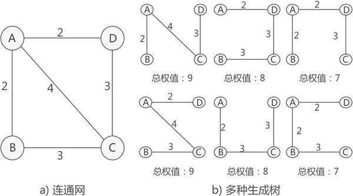

阅读：0
作者：解学武
最小生成树是什么
一个连通图对应的生成树往往有很多种，例如：
各个生成树包含的边不相同，因此它们的总权值（所有边的权值之和）也不相等。所谓最小生成树，指的就是总权值最小的生成树。
注意，一个连通网对应的最小生成树可能有多个，图 2 就是一个很好的范例，图 2a) 连通网对应的最小生成树有两个。
最小生成树可以用来解决一些实际问题。仍以图 2a) 为例，假设 A、B、C、D 这 4 个顶点各自代表一座城市，各个边表示两座城市之间可以铺设网线，边的权值表示铺设网线需要耗费的经费。如果想为这 4 座城市建立通信联络网，最节省经费的方案就是按照总权值为 7 的生成树铺设网线。
关于两种算法的具体实现思路，我会在后续两篇文章中详细讲解。
如果为连通图中的每条边赋予一个权值（可以理解为一个整数），这样的连通图又称为连通网。关于生成树的概念，读者可以猛击《生成树（森林）》详细了解。

图 2 连通网对应的多种生成树
图 2 连通网对应的多种生成树
各个生成树包含的边不相同，因此它们的总权值（所有边的权值之和）也不相等。所谓最小生成树，指的就是总权值最小的生成树。
注意，一个连通网对应的最小生成树可能有多个，图 2 就是一个很好的范例，图 2a) 连通网对应的最小生成树有两个。
最小生成树可以用来解决一些实际问题。仍以图 2a) 为例，假设 A、B、C、D 这 4 个顶点各自代表一座城市，各个边表示两座城市之间可以铺设网线，边的权值表示铺设网线需要耗费的经费。如果想为这 4 座城市建立通信联络网，最节省经费的方案就是按照总权值为 7 的生成树铺设网线。
最小生成树的具体实现
对于给定的连通网，求最小生成树常用的算法有两个，分别叫做普里姆（Prim）算法和克鲁斯卡尔（Kruskal）算法。关于两种算法的具体实现思路，我会在后续两篇文章中详细讲解。